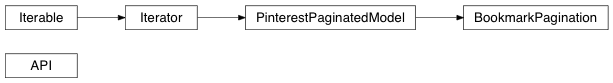

Welcome to PinPy’s documentation!
¶
pinpy Package
¶
Classes
¶
API
([access_token, v3_access_token, host, …])
Pinterest API
BookmarkPagination
(json_data, id, …)
Class Inheritance Diagram
¶

Indices and tables
¶
Index
Module Index
Search Page
Table Of Contents
Welcome to PinPy’s documentation!
pinpy Package
Classes
Class Inheritance Diagram
Indices and tables
Related Topics
Documentation overview
Next:
API
This Page
Show Source
Quick search